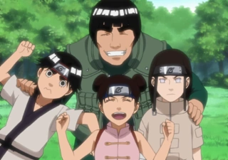
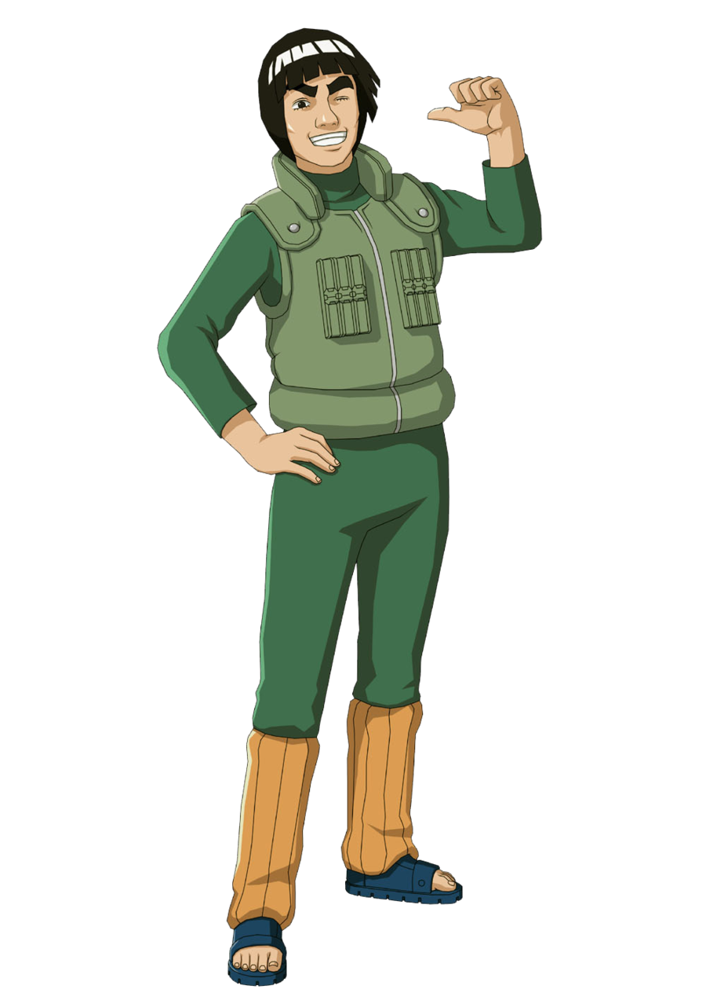
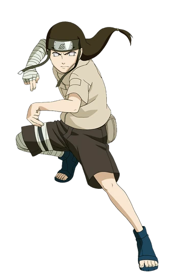

Time 9

Esta é uma página dedicada ao Time 9 de Naruto, também conhecido como Time Guy. Liderada pelo carismático e determinado Might Guy, a equipe é composta por três talentosos ninjas: Neji Hyūga, um prodígio do Clã Hyūga; Rock Lee, um guerreiro incansável que se destaca no taijutsu; e Tenten, uma especialista em armas ninjas.
Juntos, eles enfrentaram desafios incríveis e se tornaram um dos times mais marcantes da Vila da Folha. Aqui, você poderá conhecer mais sobre cada membro, suas habilidades e momentos épicos na história de Naruto!
Might guy

Might Guy é o líder da Equipe 9 em Naruto. Ele é um mestre de Taijutsu (combate físico) e é conhecido por sua energia, otimismo e dedicação. Guy é um ninja apaixonado que usa técnicas poderosas como os Oito Portões, que aumentam suas habilidades físicas. Ele é o mentor de Rock Lee, Neji Hyuga e Tenten, e tem uma rivalidade amigável com Kakashi Hatake.
Neji Hyuga

Neji Hyuga é um dos membros mais habilidosos da família Hyuga em Naruto. Ele é um prodígio do clã e possui o Byakugan, um dojutsu que lhe permite ter uma visão quase perfeita e detectar os pontos vitais de seus oponentes. Inicialmente, Neji tem uma visão muito rígida sobre destino e destino, sendo motivado pela ideia de que a vida dele já estava predestinada devido à sua posição como membro da ramificação secundária do clã Hyuga. No entanto, após vários encontros com outros ninjas e superando adversidades, Neji muda sua perspectiva, entendendo que o destino pode ser desafiado e alterado por suas próprias escolhas. Neji é um ninja calmo e sério, mas também tem um forte senso de honra e determinação, o que o torna um dos membros mais respeitados da sua geração.
Rock Lee

Rock Lee é um dos personagens mais carismáticos e determinados de Naruto. Ele é um ninja que não possui habilidades de ninjutsu ou genjutsu, mas compensa isso com seu incrível domínio do Taijutsu, o combate físico. Lee é um exemplo de perseverança e trabalho árduo, sempre buscando melhorar suas habilidades através do treinamento constante. Sua dedicação é tão grande que, sob a orientação de seu mestre, Might Guy, ele aprendeu a abrir os Oito Portões, uma técnica perigosa que aumenta suas capacidades físicas a níveis extraordinários. Lee tem um grande sonho de se tornar um grande ninja, apesar das dificuldades que enfrenta, sendo um exemplo de determinação e coragem.
Tenten

Tenten é uma ninja habilidosa e focada, conhecida por sua incrível capacidade com armas. Ela é uma especialista no uso de ferramentas ninjas, como shuriken, kunai, bombas de fumaça e outros itens, tornando-a uma das ninjas mais versáteis da sua geração. Embora não tenha a mesma quantidade de destaque que outros membros da Equipe 9, Tenten é extremamente competente em combate à distância e no manuseio de diversas armas. Seu objetivo é se tornar uma mestre em técnicas de armas e, como seus companheiros de equipe, ela possui uma forte lealdade a seu mestre, Guy Sensei. Sua determinação e habilidades a tornam uma ninja respeitada no mundo de Naruto.